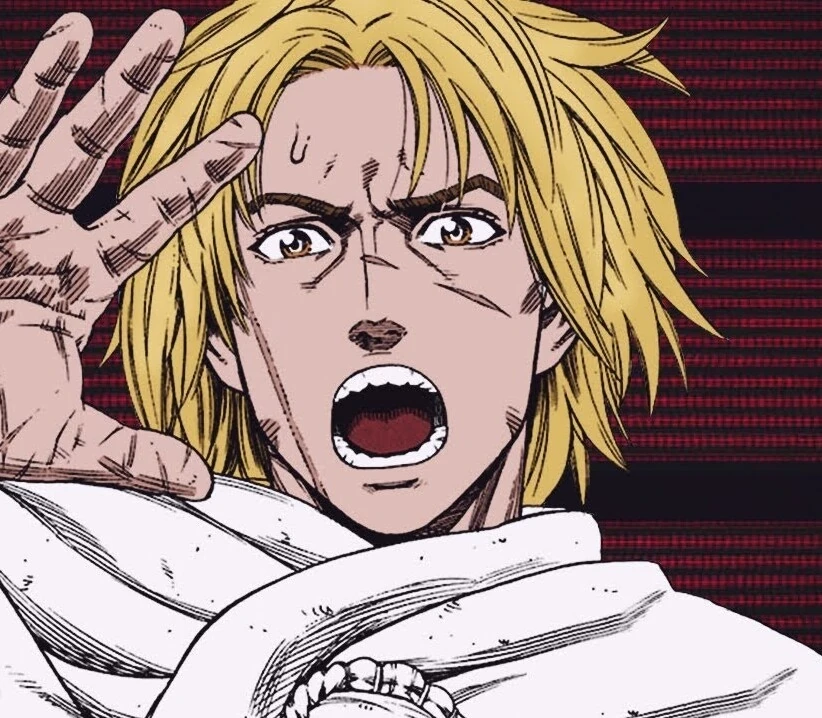
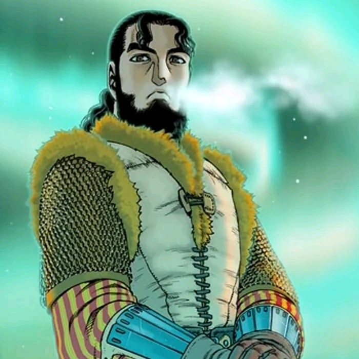
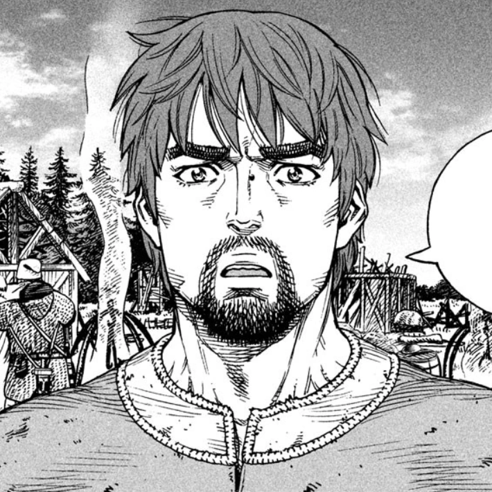
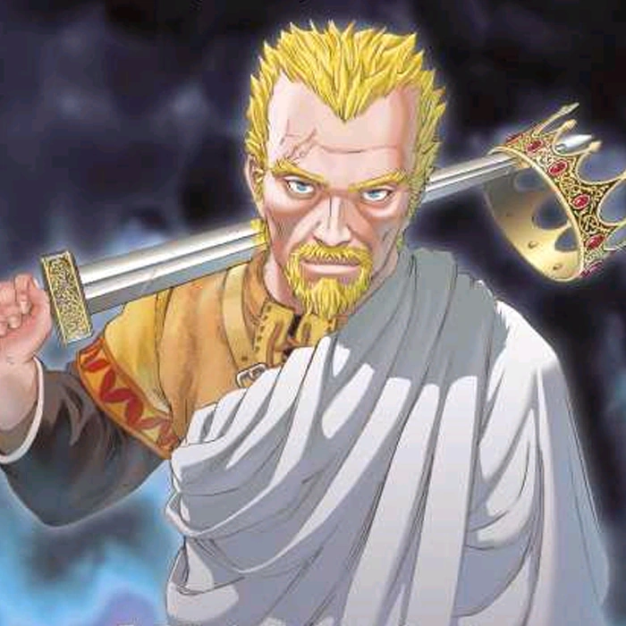

Thorfinn (トルフィン, Torufin), también apodado Karlsefni, es el protagonista principal de Vinland Saga. Es el hijo de Thors el "Troll de Jom" y Helga.

Thorfinn
Thorss
Thors Snorresson es el esposo de Helga, padre de Thorfinn e Ylva, y un ex comandante de los Jomsvikings, en donde se ganó el apodo del "Troll de Jom". A pesar de ser un temible guerrero, su personalidad cambió drásticamente tras el nacimiento de su hija, de tal manera que decidió desertar de los Jomsviking y fugarse con su familia a Islandia para escapar de la guerra.

Thorss
Einar
Einar es un antiguo esclavo que anteriormente trabajaba en un campo en el norte de Inglaterra. Cuando fue vendido a Ketil y llevado a Dinamarca, conoció a Thorfinn y más tarde se hizo su amigo, al vivir juntos la esclavitud ambos llegaron a considerarse hermanos.

Einar
Askeladd
Askeladd fue un guerrero pirata bastante astuto y misterioso. Fue además el líder de una banda de mercenarios vikingos de la cual Thorfinn y Bjorn formaron parte. Askeladd era mitad danés y mitad galés; afirmando también ser descendiente de Lucius Artorius Castus, cuyo nombre fue tomado por su madre para así ponérselo al nacer, siendo Askeladd en realidad tan sólo un apodo, cuyo significado es Ceniza, de acuerdo a lo comentado por el mismo rey Sweyn.

Askeladd
Canute
El Rey Canute, Canuto o Knut es el rey de Inglaterra y Dinamarca, sucediendo a su padre Sweyn como gobernante de Dinamarca y al Rey Edmundo en el trono de Inglaterra.Canute